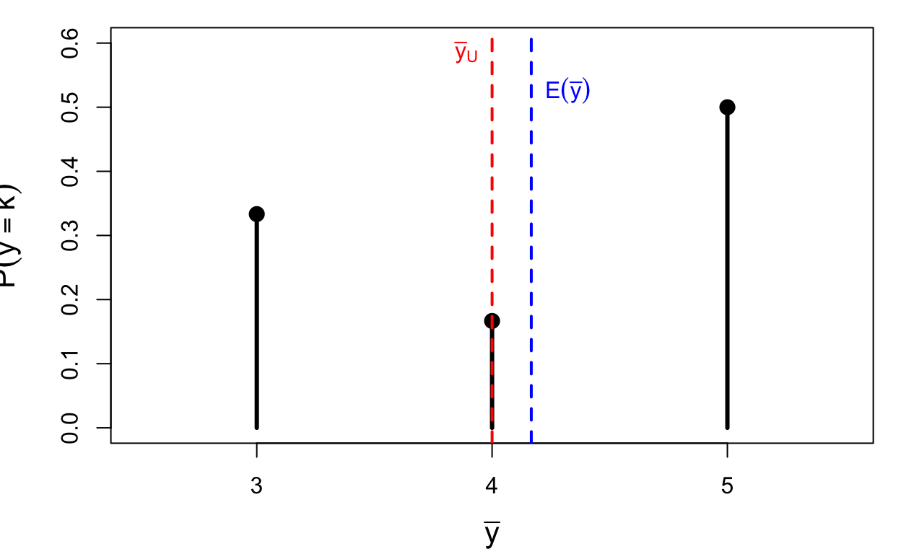
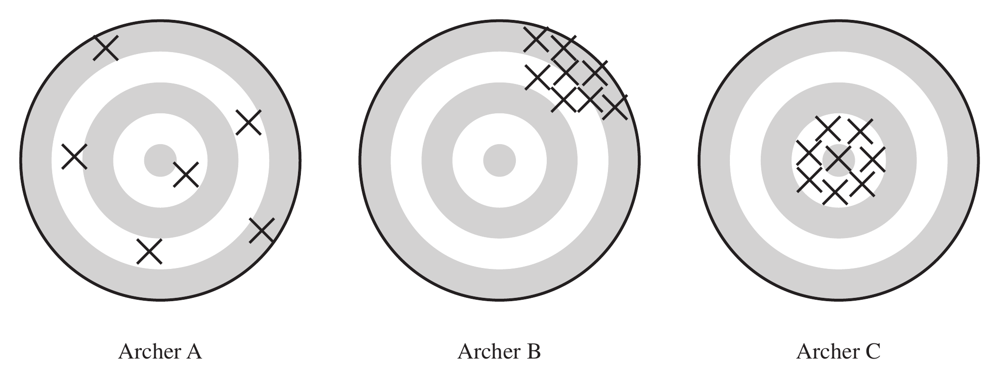

General Probability Sampling
Reading suggestions:
Concepts: Population, Sample, Sampling Probability, Inclusion Probability, Bias, Variance, MSE
The finite population, or universe, of N units is denoted by the index set \mathcal{U} = \{1, 2, \ldots, N\}.
Out of this population we can choose various samples, which are subsets of \mathcal{U}. The particular sample chosen is denoted \mathcal{S}, a subset consisting of n of the units in \mathcal{U}.
Example: suppose \mathcal{U} = \{1,2,3,4\} (N=4). Six different samples of size n=2 could be chosen: \mathcal{S}_1=\{1,2\}\quad \mathcal{S}_2=\{1,3\}\quad \mathcal{S}_3=\{1,4\}\quad \mathcal{S}_4=\{2,3\}\quad \mathcal{S}_5=\{2,4\}\quad \mathcal{S}_6=\{3,4\}
In probability sampling, each possible sample \mathcal{S} from the population has a known probability P(\mathcal{S}) of being chosen, and the probabilities of the possible samples sum to 1.
One possible design for a probability sample of size 2 from \mathcal{U}=\{1,2,3,4\}: P(\mathcal{S}_1)=\tfrac13,\quad P(\mathcal{S}_4)=\tfrac16,\quad P(\mathcal{S}_6)=\tfrac12, \quad P(\mathcal{S}_2)=P(\mathcal{S}_3)=P(\mathcal{S}_5)=0
These probabilities are known before the sample is drawn. One way to realize this design: place six labeled balls in a box — two labeled 1, one labeled 4, and three labeled 6 — then draw one ball at random; whichever label is drawn gives the sample \mathcal{S}_i.
Let y_i be a characteristic associated with the ith unit in the population. We treat y_i as a fixed quantity: if farm 723 is in the sample, the corn yield y_{723} is known exactly.
| i | 1 | 2 | 3 | \cdots | N |
|---|---|---|---|---|---|
| y_i | y_1 | y_2 | y_3 | \cdots | y_N |
Note
y_i is not a random variable in Lohr’s book. In Scheaffer’s book, y_i is used for the population value and Y_i is a random variable.
Once we have chosen a sample design, each unit in the population has a known probability of appearing in the selected sample: \pi_i = P(\text{unit } i \text{ in sample}) \tag{2.2} computed by summing the probabilities of all possible samples that contain unit i. In probability sampling, all \pi_i are known before the survey commences, and we assume \pi_i > 0 for every unit in the population.
Sampling weight: w_i = 1/\pi_i. This notation matters because for many sampling schemes, the population total estimator can be written as \hat t = \sum_{i \in \mathcal{S}} w_i \, y_i = \sum_{i \in \mathcal{S}} \frac{y_i}{\pi_i}.
For \mathcal{U}=\{1,2,3,4\}, N=4, n=2, with the sample design above:
| \mathcal{S}_i | \{1,2\} | \{2,3\} | \{1,3\} | \{2,4\} | \{1,4\} | \{3,4\} |
|---|---|---|---|---|---|---|
| P(\mathcal{S}_i) | 1/3 | 1/6 | 0 | 0 | 0 | 1/2 |
Unit i is in the sample whenever one of the sets containing it is drawn.
\pi_1 = P(\{1,2\}) = \tfrac13 \pi_2 = P(\{1,2\})+P(\{2,3\}) = \tfrac13+\tfrac16=\tfrac12 \pi_3 = P(\{2,3\})+P(\{3,4\}) = \tfrac16+\tfrac12=\tfrac46 \pi_4 = P(\{3,4\}) = \tfrac12
Note \sum_{i=1}^4 \pi_i \ne 1 (it equals 2, since n=2 units are drawn each time).
\textbf{Total:}\quad t = \sum_{i=1}^N y_i \qquad\qquad \textbf{Mean:}\quad \bar y_{\mathcal U} = \frac{t}{N} = \frac{\sum_{i=1}^N y_i}{N}
\textbf{Variance:}\quad S^2 = \frac{1}{N-1}\sum_{i=1}^N (y_i-\bar y_{\mathcal U})^2 \qquad\qquad \textbf{Standard deviation:}\quad S = \sqrt{S^2}
Note
In Scheaffer’s book, \displaystyle \sigma^2 = \frac1N \sum_{i=1}^N (y_i - \bar y_{\mathcal U})^2 (divides by N, not N-1).
| i | 1 | 2 | 3 | 4 | 5 |
|---|---|---|---|---|---|
| y_i | 1 | 0 | 0 | 0 | 1 |
t = \sum_{i=1}^5 y_i = 1+0+0+0+1 = 2 \qquad \bar y_{\mathcal U} = \frac{2}{5} = 40\% \ \text{(population proportion)} S^2 = \frac{1}{5-1}\Big((1-0.4)^2\times 2 + (0-0.4)^2\times 3\Big) = 0.3
Note
For a 0/1 population, S^2 \to p(1-p) = 0.4\times0.6 as N becomes large.
| i | 1 | 2 | 3 | 4 |
|---|---|---|---|---|
| y_i | 2 | 4 | 4 | 6 |
t = \sum_{i=1}^4 y_i = 2+4+4+6 = 16 \qquad \bar y_{\mathcal U} = \frac{16}{4} = 4 S^2 = \frac{1}{4-1}\Big((2-4)^2+(4-4)^2+(4-4)^2+(6-4)^2\Big) = \frac{8}{3}
Statistic
A statistic is a function of the observations in a sample, used for estimating a population quantity.
Sampling distribution
The sampling distribution is the distribution of a statistic under repeated sampling.
For estimating t = \sum_{i=1}^N y_i, we use \hat t = \frac{\sum_{i\in\mathcal{S}} y_i}{n} \times N
Example (same devices-per-household population): n=2, N=4, \bar y = \frac{\sum_{i\in\mathcal S} y_i}{n}, \qquad \hat t = N\cdot\bar y = 4\bar y with true population values \bar y_{\mathcal U}=4 and population total t=16.
All six possible samples of size 2 from \{y_1,\ldots,y_4\}=\{2,4,4,6\}:
| \mathcal S_i | \{1,2\} | \{1,3\} | \{1,4\} | \{2,3\} | \{2,4\} | \{3,4\} |
|---|---|---|---|---|---|---|
| P(\mathcal S_i) | 1/3 | 0 | 0 | 1/6 | 0 | 1/2 |
| \bar y | 3 | 3 | 5 | 4 | 5 | 5 |
Collecting equal values of \bar y gives the sampling distribution of \bar y:
| k | 3 | 4 | 5 |
|---|---|---|---|
| P(\bar y = k) | 1/3 | 1/6 | 1/2 |

Figure 1
E(\bar y) = 3\times\tfrac13 + 4\times\tfrac16 + 5\times\tfrac12 = \frac{25}{6} \text{Bias}(\bar y) = E(\bar y) - \bar y_{\mathcal U} = \frac{25}{6} - 4 = \frac16 \text{MSE}(\bar y) = E\big[(\bar y - \bar y_{\mathcal U})^2\big] = (3-4)^2\cdot\tfrac13 + (4-4)^2\cdot\tfrac16 + (5-4)^2\cdot\tfrac12 = 0.833
V(\bar y) = E\big[(\bar y - E(\bar y))^2\big] = \Big(3-\tfrac{25}{6}\Big)^2\tfrac13 + \Big(4-\tfrac{25}{6}\Big)^2\tfrac16 + \Big(5-\tfrac{25}{6}\Big)^2\tfrac12 = 0.8056
When \hat\theta is unbiased (E(\hat\theta)=\theta), \text{MSE}(\hat\theta) = E\big[(\hat\theta-\theta)^2\big] = E\big[(\hat\theta - E(\hat\theta))^2\big] = V(\hat\theta)
Mathematically, we can show that \text{MSE}(\hat\theta) = \big(\text{Bias}(\hat\theta)\big)^2 + V(\hat\theta)
Check with our example: \text{MSE}(\bar y) = 0.833\ldots \text{Bias}(\bar y)^2 + V(\bar y) = \Big(\frac16\Big)^2 + 0.8056 = 0.833\ldots \checkmark
An estimator \hat t of t is:
A badly biased estimator may be precise but will not be accurate: accuracy (MSE) is how close the estimate is to the truth, while precision (variance) measures how close estimates from different samples are to each other.

The finite population \mathcal U consists of units \{1,2,\ldots,N\} with measured values \{y_1,y_2,\ldots,y_N\}. We select a sample \mathcal S of n units from \mathcal U using the probabilities of selection that define the sampling design.
The y_i’s are fixed but unknown quantities — unknown unless that unit happens to appear in our sample \mathcal S.